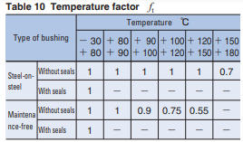
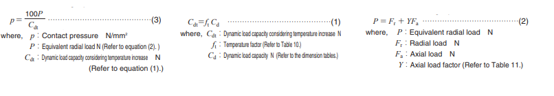
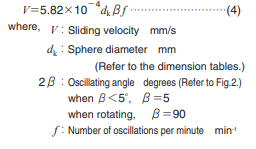
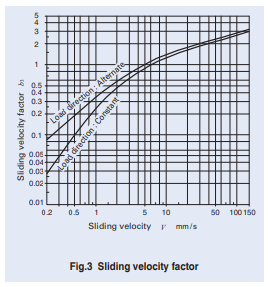

Calculations
Temperature Factor =
| Bushing Type: | |
| Application Temperature: | |
| Seals: |
Axial Load Factor =

| Axial Load, Fa: | |
| Radial Load, Fr: | |
| Fa / Fr = |
Load Direction Factor =

Lubrication Factor =

Contact Pressure = N/mm^2
| Equivalent Radial Load, P: | |
| Dynamic Load Capacity, considering Temperature Factor, Cdt: |
Total Sliding Distance = m
Please use the below graph to select the total sliding distance based on the contact pressure value above! (X-axis is *10^3 !)

Sliding Velocity = mm/s
Sliding Velocity Factor =
From the figure below, please enter the appropriate sliding velocity factor.
